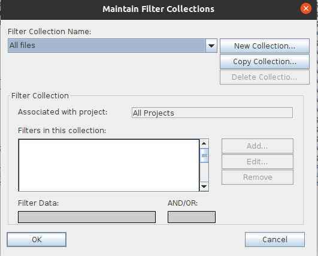

|
FiltersQVCSOS-Enterprise filters provide a simple and powerful way to limit the set of files that are displayed by the client application. You select the filter that you want to use by using the drop down combo box on the toolbar. Defining Your Own FiltersYou maintain the set of filters that are available to you by using the Filters/Maintain Filters... menu option. Selecting that menu option will display the 'Maintain Filter Collections' dialog shown here:  Filters are always applied at the client. This means that the server always sends information on all the files within a selected directory to the client and the client, based on the active filter, decides whether information about that file should be displayed or not. There are 6 'pre-defined' filter collections. Of these, you are not allowed to edit the All files filter collection, the By Commit id filter collection, or the Search Commit Messages filter collection. The All files filter is no filter at all. All files are displayed unless they are excluded by an entry in the .qvcsosignore file. The By Commit id filter allows you to choose a commit id via a separate combo box on the toolbar, and the filter will display only those files that have revisions created with that same commit id. The Search Commit Message filter searches the commit messages and displays only those files that have commit messages that contain the string you enter into the Search Commit Message edit box on the toolbar. This filter duplicates the functionality of the Revision Description Regular Expression revision filter in a simpler way. You create your own filter collection by clicking on the 'New Collection' button. You can name your filter collection any thing you want, provided that filter collection name is not already in use. Clicking the 'New Collection' button will display the 'Define Filter Collection Name' dialog: Each filter collection can be associated with a specific project, or it can be for use by all projects. The build-in filters are for use by all projects. As you add specific filters to your filter collection, you can choose whether the filter is an 'AND' filter or whether it is an 'OR' filter. Filters that are identified as 'AND' filters must all pass in order for the file to be displayed. In addition, 'AND' filters are applied before any of the 'OR' filters are tested. You can have the following filter types within your collection: FILE NAME FILTER TYPES:Include Extension: Use this filter type to include files with a specific file extension. The filter data should consist of just the file extension characters. For example, to create a filter that shows only files with the .java file extension, the filter data should be ?java? (no quotes). If you want your filter collection to include more than a single file extension (e.g. c, .cpp, and .h), you include multiple Include Extension filters within your named filter collection; one for each separate type of extension. You would also choose for the filters to be the ?OR? type, since you want one extension OR another extension, etc. Include Regular Expression Filename: Use this filter type in a way similar to the Include Extension filter, except that the filter data defines a regular expression instead of the characters of a specific file extension. See this Sun regular expression tutorial for some information on the formatting of regular expressions. Exclude Extension: Use this filter type to exclude files with a specific file extension. This filter behaves similarly to the Include Extension filter except that a file passes the filter only if it is not of the extension defined by the filter's filter data. Exclude Regular Expression Filename: Use this filter type in a way similar to the Exclude Extension filter, except that the filter data defines a regular expression instead of the characters of a specific file extension. See this Sun regular expression tutorial for some information on the formatting of regular expressions. REVISION DESCRIPTION FILTER TYPES:Revision description regular expression: Use this filter type as a way to search through all revision descriptions for a string that matches the regular expression that you define. See this Oracle regular expression tutorial for some information on the formatting of regular expressions. Exclude revision description regular expression: Use this filter type as a way to exclude all revisions that matches the regular expression that you define. See this Sun regular expression tutorial for some information on the formatting of regular expressions. COMMIT ID FILTER TYPES:Checked in after commit id: Use this filter type to show those files that have revisions that were created after the commit id defined by the filter data. The generated report will include only those revisions created after the commit id you define for the filter. Checked in before commit id: Use this filter to show those files that have revisions that were created before the commit id defined by the filter data. The generated report will include only those revisions created before the commit id you define for the filter. FILE PROPERTIES FILTER TYPES:Include File Status: Use this filter to include only those files that have a 'File status' value that matches the string that you define here. For example, to create a filter that would show only 'Stale' files, you would use this type of filter with a filter value of 'Stale'. Exclude File Status: Use this filter to exclude those files that have a 'File status' value that matches the string that you define here. For example, to create a filter that would not show 'Current' files, you would use this type of filter with a filter value of 'Current'. Exclude uncontrolled files: Use this filter to exclude files that are not under version control. Filesize greater than: Use this filter to show only those files that have a workfile size that is greater than the value you define in the filter data. Filesize less than: Use this filter to show only those files that have a workfile size that is less than the value you define in the filter data. Include last edit by: Use this filter to show only those files that were last edited by the user whose value you define in the filter data. Exclude last edit by: Use this filter to show only those files that were not last edited by the user whose value you define in the filter data. QVCSOS-Enterprise does not try to verify that the collection that you define makes any sense. For example, you could define a collection that will always produce an empty collection of files (e.g. include file extension .java and exclude extension .java). |
| For the source code, see https://github.com/jimv39/qvcsos |